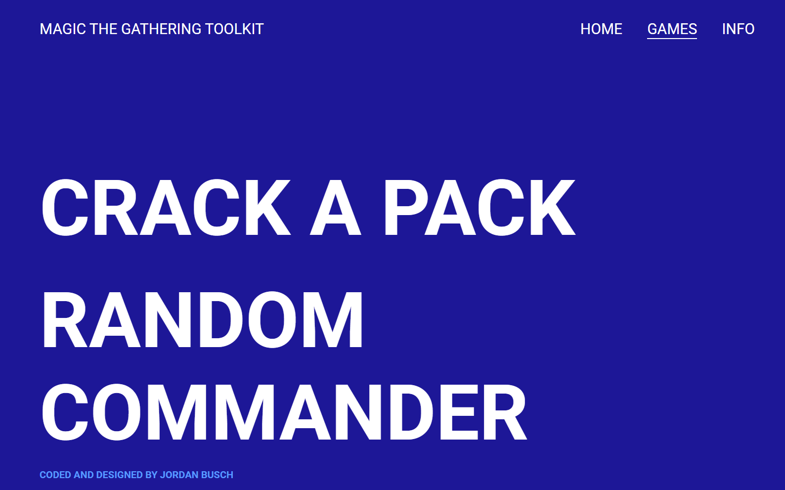
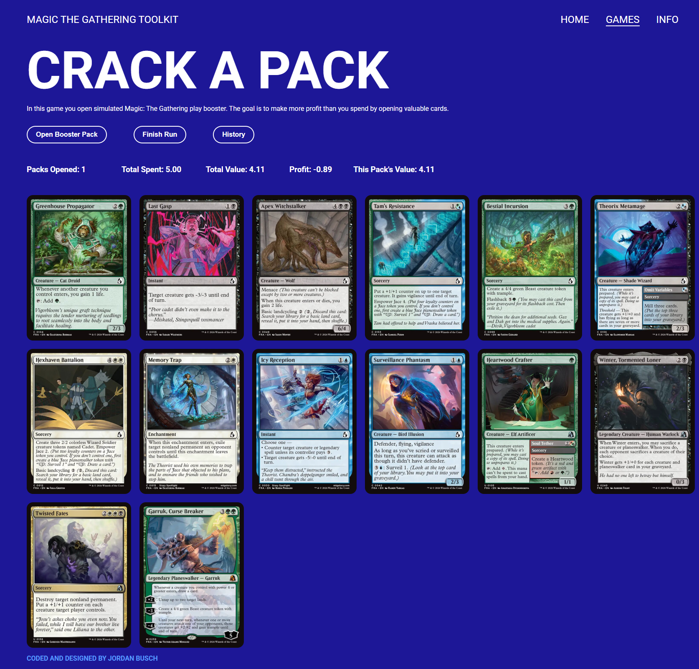
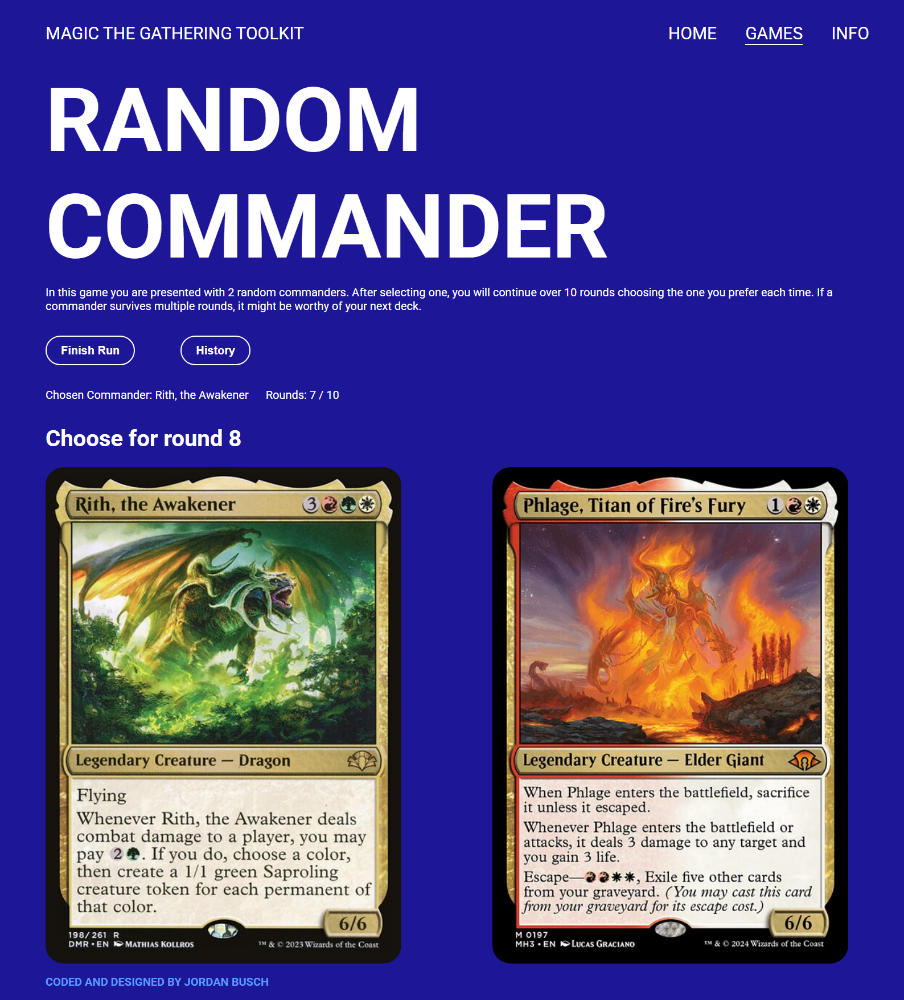

MTG TOOLBOX



The goal of this assignment was to create two games/interative tools using HTML, CSS, and JavaScript. The first game takes a given set's cards from the Scryfall api, sorts by rarity, then generates a random pack using the same constraints as a real pack. It tracks the cost to value ratio and you can keep opening packs to see how you fare. The second game is a this or that style gauntlet generating two legendary creatures at random. You choose your preferred commander, and you see which one will make it to the end of 10 rounds.


